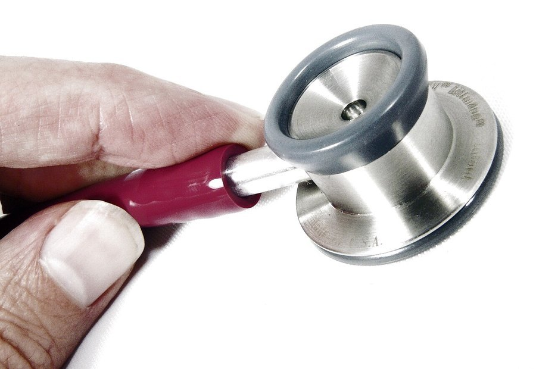

Heart Rate Variability Explained: What HRV Tells You
Your wearable flashes an HRV number every morning. Here's what heart rate variability actually measures, why it swings around so much, and what's genuinely worth paying attention to.

Key takeaways
- HRV measures the tiny gaps between heartbeats, not how fast your heart beats.
- Higher HRV generally reflects better recovery and nervous-system flexibility; it's not one-size-fits-all.
- Your own trend over weeks matters more than comparing a single number to anyone else's.
- Sleep, alcohol, stress and training load all move HRV day to day.
- It's a wellness signal, not a diagnosis — talk to a doctor about symptoms, not just a number.
Heart rate variability (HRV) measures the tiny, fluctuating gaps in time between consecutive heartbeats, not how fast your heart is beating. A higher HRV generally reflects a more flexible, better-recovered nervous system, while a lower HRV often shows up during stress, poor sleep, illness or heavy training. There's no single "good" number since HRV varies by age, fitness and measurement method; what matters most is the trend in your own readings over time.
That's the short version. The longer, more useful version covers what's actually happening inside your chest when HRV moves, why your number bounces around so much morning to morning, and how to read it without obsessing over it.
What is heart rate variability, mechanically?
Your heart doesn't beat on a rigid metronome. Even at a steady "72 beats per minute," the actual gap between beat one and beat two might be slightly longer or shorter than the gap between beat two and beat three. HRV quantifies that variation. It exists because your autonomic nervous system constantly adjusts heart rhythm through two competing branches: the sympathetic branch (fight-or-flight, speeds things up) and the parasympathetic branch (rest-and-digest, slows things down). More variability generally means those two systems are actively, healthily negotiating with each other beat to beat. Less variability can mean one branch, usually the stress branch, is dominating.
How is HRV actually measured?
Clinically, HRV comes from an ECG reading the precise electrical timing of each heartbeat over several minutes. Consumer wearables estimate it using optical sensors (the green light on the back of a smartwatch) or a chest strap, usually during sleep when movement artifacts are lowest. The most common metric reported to consumers is RMSSD, a statistical measure of beat-to-beat variation, though apps often convert it into a simplified daily score. Different brands calculate and scale this differently, which is exactly why comparing your Garmin number to a friend's Oura number tells you very little.
What counts as a "good" HRV number?
There genuinely isn't a universal target. HRV declines naturally with age even in healthy people, varies by sex, and is heavily influenced by fitness level, genetics and the specific device or algorithm used. A HRV of 40ms might be unremarkable for one person and a meaningful drop for another whose baseline normally sits near 70ms. This is why most sleep and fitness apps frame HRV as a personal baseline you build over two to four weeks, then watch for movement away from, rather than a number to chase upward indefinitely or compare against a chart.
| Pattern | What it usually suggests |
|---|---|
| HRV rising above your baseline | Good recovery, adequate sleep, lower stress load |
| HRV steady near baseline | Normal day-to-day variation, nothing to act on |
| HRV dipping for 1-2 days | Often a late night, alcohol, a hard workout or minor stress |
| HRV dropping for a week or more | Worth addressing: overtraining, chronic stress or poor sleep |
Why does my HRV bounce around so much day to day?
Because HRV is sensitive to almost everything. Alcohol the night before reliably suppresses it. Poor or short sleep does the same. A hard workout the previous evening can lower overnight HRV as your body works to recover. Illness, dehydration, travel and even the timing of your measurement (right after waking versus mid-morning) all shift the number. None of that is a malfunction; it's the measurement doing exactly what it's supposed to do, which is reflect your nervous system's current load. A single low reading after a late night out means almost nothing. A downward trend sustained across a week is the signal actually worth paying attention to.
Does low HRV mean something is wrong with my heart?
Usually not in the way people fear. A low or dropping HRV typically points to stress, poor recovery, overtraining, illness or poor sleep rather than a structural heart problem. That said, HRV patterns have been studied as one marker among several for cardiovascular risk and autonomic health in clinical research, which is different from a wearable's daily score being a diagnostic tool. If you have symptoms, chest discomfort, unusual palpitations, dizziness, breathlessness, those deserve a doctor's attention regardless of what your HRV app says. Checking your resting heart rate by age alongside HRV gives a fuller, still-informal picture of cardiovascular fitness.
Can you actually improve your HRV?
Yes, for most people, through the same habits that support cardiovascular and nervous-system health generally. Consistent sleep timing tends to produce the most noticeable gains. Regular moderate aerobic exercise, without constant overtraining, raises baseline HRV over weeks. Cutting back on alcohol shows up quickly in the numbers for many people. Slow, controlled breathing practices, roughly five to six breaths per minute, measurably shift HRV in the short term and may build a higher baseline with regular practice. None of these move the needle overnight; think in terms of weeks, not days.
- Keep a consistent sleep and wake schedule, even on weekends.
- Limit alcohol, especially in the hours before bed.
- Build in recovery days between hard workouts rather than training at full intensity daily.
- Practice slow, paced breathing for a few minutes during stressful moments.
- Track your weekly average rather than reacting to single-day swings.
How does HRV connect to stress and recovery?
HRV is often described as a proxy for how well your body is coping with cumulative stress, physical and mental. Athletes use it to decide whether to push a hard training session or back off. People managing chronic stress sometimes use it as objective feedback that a demanding week is actually taking a toll, even when they feel fine on the surface. That feedback loop is genuinely useful, but it works best as a nudge toward better habits, lower stress, better sleep, more recovery, rather than another number to anxiously check first thing every morning. If checking your HRV score is adding stress rather than relieving it, that defeats the purpose.
Should athletes care about HRV differently than everyone else?
Somewhat. Athletes and heavy exercisers often use daily HRV readings to guide training load, backing off intensity on low-HRV days and pushing harder when the number is high or stable. For most people without a structured training program, a weekly glance at the trend is plenty. Checking obsessively, or letting a single rough morning derail your whole day's plans, adds anxiety without adding useful information.
When should you talk to a doctor about HRV?
Bring it up if you notice a sustained, unexplained drop over several weeks with no clear cause like poor sleep or heavy training, or if HRV changes accompany other symptoms: palpitations, dizziness, chest discomfort or unusual fatigue. A doctor can evaluate the fuller clinical picture, which a consumer wearable was never designed to replace. Used sensibly, HRV is a helpful nudge toward better sleep, lighter drinking and smarter training, not a replacement for medical care when something actually feels wrong.
Frequently asked questions
What is a good heart rate variability score?
There's no single universal number, because HRV varies widely by age, fitness level and the device measuring it. What matters more than any single reading is your own trend over weeks: a gradual rise generally reflects better recovery, and a sustained drop can flag overtraining, poor sleep or illness.
Does low HRV mean I have a heart problem?
Not by itself. Low HRV can reflect stress, poor sleep, alcohol, illness or overtraining, and it naturally declines with age in healthy people too. It's a useful stress and recovery signal, not a diagnostic test, and a wearable's HRV reading shouldn't replace a doctor's evaluation if you have symptoms.
Can I improve my HRV?
Yes, for most people. Consistent sleep, regular moderate exercise, limiting alcohol, managing stress and practicing slow breathing are the habits most consistently linked to higher HRV over time. Changes build over weeks, not overnight.
Why does my HRV vary so much from day to day?
Day-to-day swings are normal and reflect sleep quality, alcohol, hydration, illness, training load and even measurement timing. Looking at a rolling weekly average is more informative than reacting to a single night's number.
Is a higher heart rate variability always better?
Generally higher HRV reflects better autonomic flexibility and recovery, but context matters. A sudden, unexplained spike alongside symptoms like dizziness or an irregular heartbeat is worth mentioning to a doctor rather than treated as automatically good news.
Do wearable HRV readings match clinical measurements?
Consumer wearables estimate HRV reasonably well for tracking personal trends, but their absolute numbers often differ from clinical-grade ECG measurements and from each other. Compare your own device against your own history, not against someone else's app.
What's the difference between heart rate and heart rate variability?
Heart rate is simply how many times your heart beats per minute. Heart rate variability measures the tiny changes in time between consecutive beats, which reflects how flexibly your nervous system can shift between alert and relaxed states.
Related: Resting heart rate by age · How to lower blood pressure naturally · Walking and heart health · LDL vs HDL cholesterol
Image: Stethoscopes / Wikimedia Commons / CC BY-SA 3.0